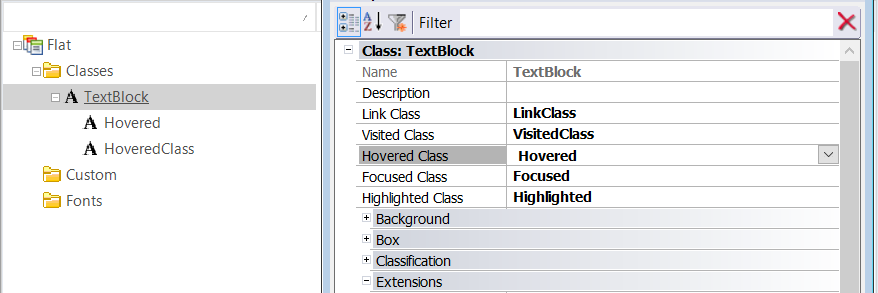

The following properties are available for the Textblock classes in the GeneXus Theme:
- Link Class: Class to be used when a TextBlock has its Link property set, or when it's bound to an event
- Visited Class: Class to be used when a TextBlock, with its Link property set, is in visited state
- Hovered Class: Class to be used when the TextBlock is hovered over
- Focused Class: Class to be used when a TextBlock gets the focus, its Link property is set, or it's bound to an event
- Highlighted Class: Class to be used when a TextBlock is active (it's being pressed), its Link property is set, or it's bound to an event.
The class assigned to these properties has to be a descendant of the Textblock class.

|